🎨 Themes
Pick a theme with one line in your spec:
theme = "catppuccin-mocha"
The presets are the themes people most often use in their terminal and editor, with colours taken from Ghostty's bundled themes. zoetty themes lists them in your terminal.
Presets
theme = |
|
|---|---|
catppuccin-latte |
 |
catppuccin-mocha |
 |
dracula |
 |
everforest |
 |
github-dark |
 |
github-light |
 |
gruvbox-dark |
 |
gruvbox-light |
 |
kanagawa |
 |
monokai-classic |
 |
monokai-pro |
 |
nord |
 |
one-dark |
 |
rose-pine |
 |
solarized-dark |
 |
solarized-light |
 |
tokyo-night |
 |
Each is built from a spec in docs/clips/themes/.
Changing a preset
Give [theme] a name to start from a preset, then set the colours you want to change:
[theme]
name = "dracula"
bg = "#1e1f29"
To see every colour a preset sets, print it with zoetty themes NAME.
Making your own
A theme is nine colours. These are zoetty's defaults, used for anything you don't set. Copy the table into a spec and change it:
[theme]
bg = "#1c1c1c"
fg = "#d0d0d0"
bar = "#2a2a2a"
blue = "#4b8fe3"
green = "#2fcf7a"
yellow = "#e6e04a"
red = "#e05252"
cyan = "#4fc6d6"
magenta = "#c678dd"
bg is the background, fg the text, and bar the window bar. The other six colour text marked up as [blue], [green] and so on, or printed in those ANSI colours by a recorded command. Bright ANSI colours use the same six.
Restyling HTML clips with CSS
An HTML fragment keeps its theme in CSS custom properties, on the clip's outer <div>. For a clip built to demo.html, with the default theme, the fragment's <style> has:
.zt-demo {
--bg: #1c1c1c;
--fg: #d0d0d0;
--bar: #2a2a2a;
--blue: #4b8fe3;
--green: #2fcf7a;
--yellow: #e6e04a;
--red: #e05252;
--cyan: #4fc6d6;
--magenta: #c678dd;
}
Every class starts with zt- and the output file's name, so you can restyle a clip from your page's own stylesheet, without touching the built file:
| Class | What it is |
|---|---|
zt-demo |
The window: background --bg, text --fg |
zt-demo-bar |
The window bar: background --bar |
zt-demo-screen |
The terminal screen, inside the window |
zt-demo-blue, -green, -yellow, -red, -cyan, -magenta |
Coloured text, using the variable of the same name |
zt-demo-bold, -dim, -italic |
Text styles |
zt-demo-caret |
The blinking cursor, in --fg |
zt-demo-replay |
The replay button, in clips that stop |
The fragment's <style> comes after your stylesheet, so give your rules a little more weight than a single class. div.zt-demo is enough:
/* One clip */
div.zt-demo {
--bg: #1e1e2e;
--fg: #cdd6f4;
--bar: #181825;
}
/* Every zoetty clip on the page */
div[class^="zt-"] {
--blue: #89b4fa;
--green: #a6e3a1;
}
/* More than colours */
div.zt-demo {
border-radius: 0;
box-shadow: none;
}
div.zt-demo .zt-demo-bold {
color: var(--yellow);
}
This is also the quickest way to match a docs site's own light and dark modes: set the variables inside a prefers-color-scheme media query, or under whatever class your site's theme switcher sets.
SVG clips shown as images can't be styled from the page: an <img> keeps its CSS to itself. Use theme in the spec for those.
For agents
To match a project's colours, set theme to the closest preset, or print one with zoetty themes NAME and change its colours in the spec. For HTML fragments on a docs site, override the CSS variables above in the site's stylesheet rather than editing the built .html file, which zoetty build overwrites.